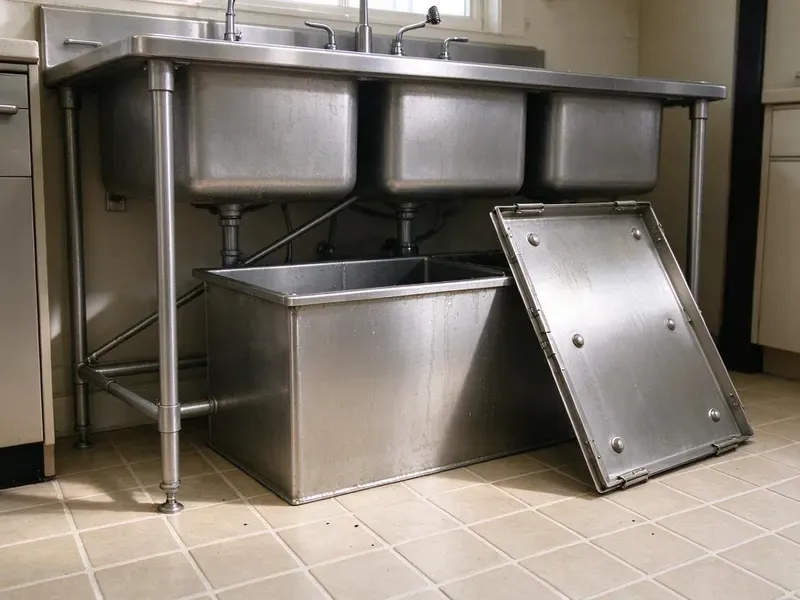

Garbage Disposal Replacement in Minnetonka, MN
Old 1/3 HP unit jamming every week in Minnetonka, MN? CNV Plumbing swaps it for a 1/2 or 3/4 HP unit that keeps up.
- Quiet and Powerful Models
- Same Day Replacement
- All Major Brands
- Every Joint Leak Tested
Schedule a Disposal Replacement in Minnetonka, MN
We price the unit and labor as one number, before any work begins.
Same-Day Garbage Disposal Replacement in Minnetonka, MN
CNV Plumbing helps you decide whether a disposal is worth fixing before we replace it. Some are worth saving. A young unit that jammed deserves a repair, while one leaking from the housing or tripping its reset every week is at the end of its life, and we install the right replacement for your kitchen in Minnetonka, MN.
Some of what we do:
- Replace sink flanges, mounts and discharge tubes as needed
- Wiring and plumbing reconnection
- Safe removal of old units

Additional Kitchen Plumbing Services in Minnetonka, MN
Our kitchen plumbing services in Minnetonka, MN cover sinks, disposals, dishwashers, and grease traps so your kitchen keeps running without backups or leaks.


Customers
Why Choose CNV Plumbing for Garbage Disposal Replacement in Minnetonka, MN?
We replace the whole assembly, not just the unit. The sink flange, the mounting ring, the discharge gasket and the dishwasher hose clamp all get replaced, since those are the parts that leak first when they are reused on a new disposal. The extra parts cost little.
- Proven Brands, We install InSinkErator, Waste King and Moen, brands with parts easy to find.
- Correct Sizing, We help you pick from 1/3 HP to 1 HP based on your household.
- Quick Swaps, Most replacements are finished in about an hour.
Citywide Coverage
From the suburbs to the city center, our plumbers replace disposals across Minnetonka. Rentals get the same work. Landlords often need fast swaps during turnover, and we can do several units on one trip.
Experienced Team
Matching the new disposal to your drain and dishwasher setup is part of the job. The trap height decides a lot. Since a taller unit can hang lower, they check the trap and drop the drain when needed so water does not sit in the chamber.
Safety-First Approach
We follow local plumbing codes and safe work practices on every replacement in Minnetonka, MN. The code covers traps and dishwasher drains. A dishwasher hose with no high loop or air gap can let dirty sink water siphon back into the dishwasher, so we add one if the old install skipped it.
Trusted Certified Minnetonka Plumbing Services Professionals
At CNV Plumbing, we take pride in licensed, certified plumbing services throughout Minnetonka, MN. Credentials matter in this trade. Our plumbers hold recognized industry credentials, and they follow strict safety and quality rules on every repair, installation and maintenance call we run.
Call Us Now PHCC Plumbing Contractor Recognition
PHCC Plumbing Contractor Recognition Better Business Bureau (BBB) Accreditation
Better Business Bureau (BBB) Accreditation Angi Certified Pro
Angi Certified Pro ISO 9001 Quality Management Certification
ISO 9001 Quality Management CertificationSwapping Out Old Disposals Properly in Minnetonka, MN
Upgrading to a Quieter Disposal in Minnetonka
Older disposals can be loud and rattle the sink. Today's units have insulation, vibration-damping mounts and better balanced motors, and a sink pad on thin stainless helps further. The difference is easy to hear.

Mount and Flange Replacement in Minnetonka
During every replacement we inspect the sink flange and mount. Corroded, scratched or leaking parts get replaced, which stops top leaks and gives the new disposal a tight seal at the sink. We clean off the old putty.
Replacing Leaking Disposals in Minnetonka, MN
Slow drips under the sink ruin cabinet bases and leave a musty smell long after the drip is fixed. If your disposal leaks from the housing or a cracked body, replacement is the only real fix, and we inspect the cabinet floor for water damage before installing the new unit. Every seal is new. Flange, discharge and inlet seals all get swapped.
Leaking Disposal Replacement in Minnetonka
Water from the bottom of the housing means the internal seal has failed, and that seal is not a replaceable part. We pull the unit, dry the cabinet, check the floor for soft spots and install a new disposal with a new flange and gaskets so every seal on the assembly is fresh. Soft cabinet floors need attention. We point it out before it gets worse.
Disposal Replacement Cost and Value in Minnetonka, MN
Replacement cost depends on the model and any drain or electrical changes. Basic swaps cost least, and quieter, stronger models cost more up front but tend to last longer and come with better warranties. You pick the level.
Higher Horsepower Disposal Upgrades in Minnetonka, MN
A struggling unit is often fixed by stepping up to 3/4 or 1 HP. Extra power cuts jams and grinds finer, and we check the circuit and cabinet room before we install and test the bigger unit. Most kitchens can take it.
Replacement Options by Price in Minnetonka
Basic disposals do fine with light use, mid-range units suit most families, and premium models add quiet operation and longer warranties. We explain what each level gets you, including horsepower, grind stages, noise and warranty length, then quote the one you pick with installation included. No upselling.

Disposal Replacement With Dishwasher Connection in Minnetonka, MN
Dishwashers that drain into the disposal need the knockout plug in the new unit removed first. The hose gets a new clamp, and we confirm an air gap or high loop so sink water cannot flow back into the dishwasher. We test the pair together.
Disposal Replacement Near Me in Minnetonka, MN
Looking for disposal replacement near you in Minnetonka, MN? CNV Plumbing has plumbers in the area most days, which often makes a same-day swap possible. Note the old model if you can. The model number on the bottom of the old disposal tells us which mount you have, so we can bring a replacement that fits without changing the flange.
When your disposal fails, you need a replacement fast. We are in Minnetonka every day with common units on the truck. A typical swap takes about an hour, including haul-away and a test with the dishwasher draining through it.
CNV Plumbing at a Glance
- Fully licensed plumbing team covering Minnetonka, MN
- Same-day appointments and 24/7 emergency response
- Upfront, flat-rate pricing before work begins
- 4.8-star rated by 501+ Minnesota customers
Minnetonka Map
Minnetonka Information
- Population
- 52,463
- Area codes
- 952/763/612
- Service area
- Minnetonka and communities within 40 miles
- Nearby
- St. Louis Park, Edina, Eden Prairie, Plymouth
Scale, grease and years of daily grinding wear disposals out, so swapping a tired unit before it leaks into the cabinet saves Minnetonka, MN homeowners a bigger repair.
Expert Services
Call CNV Plumbing for reliable plumbing work done by licensed pros in Minnetonka, MN.
Our Specialized Plumbing Services in Minnetonka, MN
At CNV Plumbing, we handle the full list of plumbing services across Minnetonka, MN. We go from leak detection all the way to full system installations, for homes and commercial buildings, and we do it quickly at a fair price. Here are the core services we offer:


How a Disposal Replacement Works in Minnetonka, MN
Here is how a disposal replacement goes with CNV Plumbing in Minnetonka, MN.
Call for a Price
Call (612) 712-9569 and describe your current unit. We will quote the unit and labor together.
Check the Old Unit
Your plumber makes sure replacement is the right call at your Minnetonka home and helps you pick the new unit.
Remove and Install
We take out the old disposal, install the new one on a fresh mount and run it with water to check for leaks.
Frequently Asked Questions About Garbage Disposal Replacement in Minnetonka
Expect about $200 to $500 with the unit and labor. Price depends on the model, the horsepower and any drain or wiring work, and a same-brand swap on a sound mount stays near the bottom. The quote is flat.
Leaks from the housing, humming without grinding, clogs that keep coming back, a smell that will not clean out or a unit that will not start after a reset. A leaking body ends it. Once water gets past the internal seal, it reaches the motor, and no repair will stop it.
Our usual picks are InSinkErator, Waste King, Moen and GE. Power, noise and warranty usually decide it.
Very little. Keep fibrous and hard scraps out, run cold water and toss in ice or citrus peels occasionally. Running cold water for a few seconds after each use flushes ground food past the trap and keeps buildup from settling in the drain arm.
Think about how much you cook. For light use 1/3 or 1/2 HP works, and for regular cooking or tougher scraps, 3/4 or 1 HP is better, and we can help you weigh it for your Minnetonka home.
Same-brand swaps are doable for a handy homeowner. Wiring, the flange seal and the dishwasher knockout are where DIY swaps go wrong, leading to shock risk, slow leaks or a flooded dishwasher. For us, it is about an hour.
A continuous-feed unit runs on a switch as you feed it. Batch-feed units only start when the stopper lid is seated, which keeps hands out of the chamber but means you grind one load at a time. We replace both types.
A same-mount swap is doable for many homeowners. For wiring or drain changes, a plumber is safer.
Hear From Customers Who Hired Our Plumbing Experts

Marcus H.
Grease from the fryer line kept clogging the kitchen drain at my diner. CNV Plumbing hydro jetted the line after closing, showed me the buildup on camera, and set us up on a quarterly cleaning so it does not catch us on a Friday again.
Drain Cleaning · Edina, MN
Brian W.
I smelled gas behind the dryer and called right away. The plumber found a corroded flex connector, replaced it, and pressure tested the whole line before turning the gas back on. He let me watch the gauge hold steady for fifteen minutes.
Gas Line Repair · Bloomington, MNPaul B.
Our pit pump ran nonstop even in dry weather. The plumber found the check valve was stuck open, so the same water kept cycling back into the pit. New valve, new float switch, done in an hour. It runs quiet now.
Sump Pump · Bloomington, MN
Monica A.
Our water bill nearly doubled in one month with no change in how we used water. The tech checked the meter, heard the leak under the hallway with his equipment, and opened a hole about a foot square. Fixed the same day.
Slab Leak Repair · Minneapolis, MN
Emily R.
The shutoff valve under our kitchen sink snapped off in my hand on a Sunday morning. CNV Plumbing had someone out by early afternoon. He replaced both angle stops with quarter turn valves and showed me where our main shutoff was, which I honestly did not know.
Plumbing Repair · Plymouth, MNSofia M.
Two new toilets went in during one visit. The tech set them on new wax rings and swapped the old supply lines. He also noticed our bathroom faucet dripping and replaced the cartridge while he was there. No mess left behind.
Toilet Installation · St. Louis Park, MN